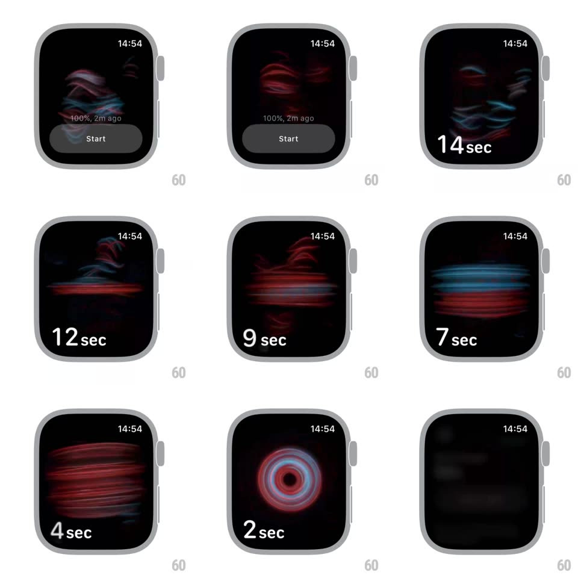

Media
Frame-by-frame

Rebuild this interaction 1:1: the Apple Watch Blood Oxygen measurement - tapping Start ignites a swirling mass of red and blue vein-like filaments that churn across the watch face during the 15-second countdown, thicken into horizontal bands mid-measurement, coil into concentric rings at the end, and dissolve into the results.

Rebuild this interaction 1:1: the Apple Watch Blood Oxygen measurement - tapping Start ignites a swirling mass of red and blue vein-like filaments that churn across the watch face during the 15-second countdown, thicken into horizontal bands mid-measurement, coil into concentric rings at the end, and dissolve into the results.
## Integration
Integration: stack-agnostic spec - springs given as stiffness/damping, timed motions as duration + curve; map every value to your framework and animation library of choice.
## Scene
Apple Watch Blood Oxygen app: last reading ("100%, 2m ago") and a gray Start button; during measurement the screen is black with the filament field and a large "N sec" countdown bottom-left.
## Motion spec
Pattern: organic filament flow with staged choreography.
- Start: the button fades as red and blue filaments swirl in from the edges (~600ms), forming a churning vortex of soft light trails (each trail ~40px wide, heavy motion blur, slow curl-noise paths).
- Countdown: "15 sec" -> "0 sec" ticks bottom-left; around 11s the filaments align into broad horizontal bands (red below, blue above) flowing laterally; near 3s they coil inward into concentric rings rotating around center.
- At 0: the rings collapse to a dot and blur out (400ms), crossfading to the results screen with the new reading.
- The filament field never holds still - constant fluid motion, ~30% speed variation across strands.
## Calibration
- Red and blue stay partially separate (red dominant lower, blue upper) - they interleave but never blend to purple.
- Everything is soft: blurred edges, additive glow, no hard shapes.
## Reduced motion
A static soft red/blue orb pulses gently during the countdown; results crossfade in.
## Don't miss
- The countdown is the only text on screen during measurement.
- The three formations (vortex, bands, rings) morph continuously - no cuts between stages.